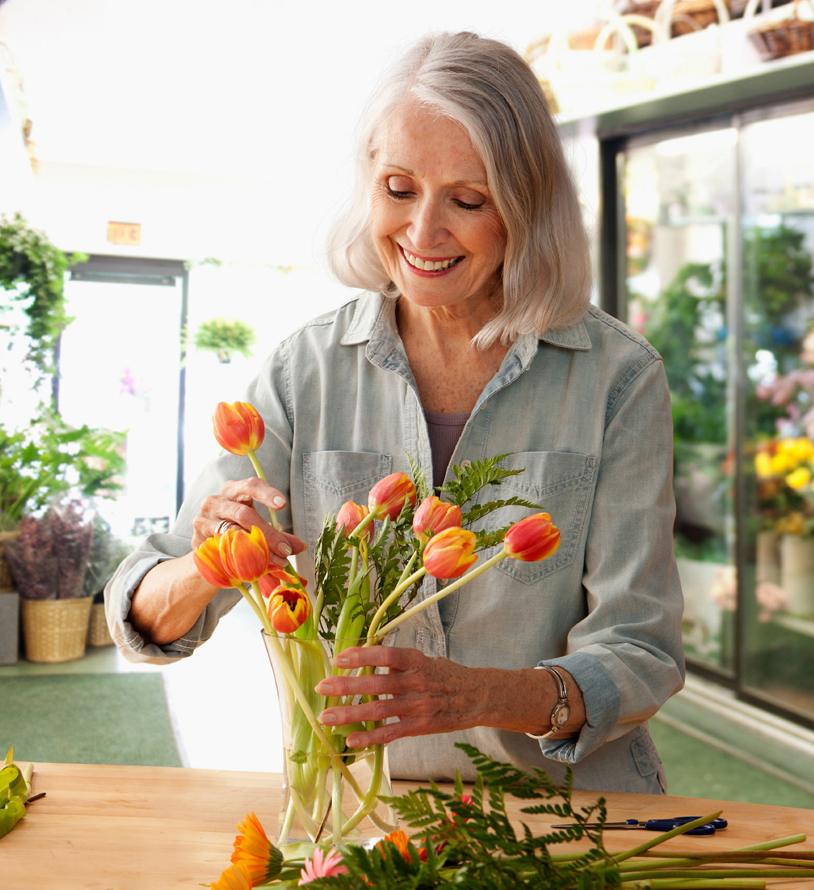

Design Challenge
We first began with the design challenge. We used a template from the Human Centered Design in order to come up with our design question.
We first began with the design challenge. We used a template from the Human Centered Design in order to come up with our design question.
After reasearching my client and secondary sources, I focused in on who my audience was and what my goals for them were.